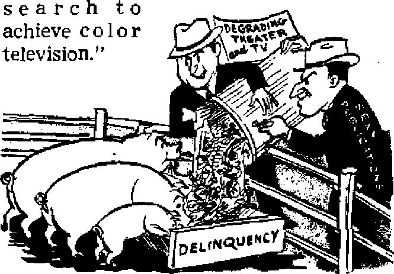
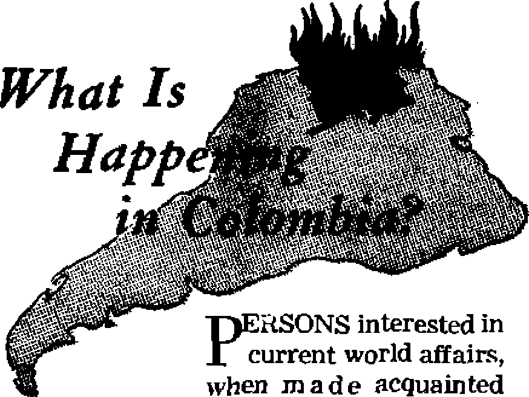

A FOOL’S PARADISE OF MORALS
Papal Appeal for War Orphans
Scandals in Orthodox Monasteries
Jehovah’s Witnesses in China
THE MISSION OF THIS JOURNAL
News sources that are able to keep you awake to the vital issues of our times must he unfettered by censorship and selfish interests. “Awake!1' has no fetters. It recognize# facts, faces facts, is free to publish facts. It is not bound by political ambitions or obligations; it is unhampered by advertisers whose toes must not be trodden on; it is unprejudiced by traditional creeds. This journal keeps itself free that it may speak freely to you. But it does not abuse its freedom. It maintains integrity to truth.
“Awake!” uses the regular news channels, but is not dependent on them. Its own correspondents are on all continents, in scores of nations. From the four corners of ths earth their uncensored, on * the* scenes reports come to you through these columns. This journal’s viewpoint is not narrow, but is international. It is read in many nations, in many languages, by persons of all ages. Through its pages many fields of knowledge pass in review—government, commerce, religion, history, geography, science, social conditions, natural wonders—why, its cover* age is as broad as the earth and as high as the heavens.
“Awake!” pledges itself to righteous principles, to exposing hidden foes and subtle dangers, to championing freedom for all, to comforting moumers and strengthening those disheartened by the failures of a delinquent world, reflecting sure hope for the establishment of a right’ eous New World.
Get acquainted with “Awake!” Keep awake by reading “Awake!”
Published Semimonthly By WATCHTOWER BIBLE AND TRACT SOCIETY, INC.
117 Adams Street
X JI. Knojj^ Prc$idtMC
Printing thl* issue: 870,000
Language in which this mapula* h published: Scminumthly—Afrikaans, English. S'lnnleh, German. Norwegian, Spanish. Monthly—Danish, French. Urcek. PertiKuese, Swedish, Ukrainian,
flffleaa Yeatly subscription Rate
America, U.S,. 117 Adams St.. Brooklyn I, NT. $1 Aiftralla. 11 Berttfortf Rd., Ktra(Wld, N.S.W.
Canada, 40 Irwin Ave., TurnnLo 5r Ontario $1 Bnatanl, 34 Craven Terrace. London, W. 2 7a South Africa, 623 Boston House, Cape Ioan 7g
Brooklyn 1, N. Y., U. S, A.
Five cent* * copy
Remittances should be in office lei four country Iti compliance with reguliitaijs to gtiarantw safe dpllTury of mraupy, Remittances are lecepteti it Brooklyn from countries when- mi nfiiwi is located.
by international money order only, Subscription rates in different countries are here stated in local currency. Nottae Of expiration (with renewal blank) is F*nt at leant two issues before subscription ?x pirea. Chanpa of address alien sent tn nnr office may be expected effective allhln one month. Send yw old aa aell aa new address.
Entered as second-cline matter at Brooklyn, N. Y,
Act trf Miwth 3. 1873. Printed in U. S. A-
jlitical Pressure from Religious Loaders 3 j Fool’s Paradise of Morals
harity Begins—at Home or Abroad? 12
Qiat Is Happening in Colombia?
Scandals in Orthodox Monasteries and
Malaria, Scourge of the Tropics
“Your Word Is Truth”
HOW much influence do you think church pressure groups exercise over lawmakers in the United States? Not much? They probably wield much more than you imagine. Generally, the religious organizations hesitate to be identified with “lobbying”, but they do engage in it, and some religious leaders argue for even more religious influence in politics.
Msgr. Thomas J. McCarthy of the National Catholic Welfare Conference said (Time friagazine, January 22, 1951) that Protestant groups “certainly used secular methods such as badgering Congress and the president for the ultimate purpose of dominating the social scene in American life”. On February 1 one of the organizations McCarthy attacked charged that the Roman Church’s “political ambitions” are inconsistent with the "ideals of American democracy”. The same day an official of the American Jewish Congress, Leo Pfeffer, censured Protestants who plead for separation of church and state but press for their own denominational interests. However, the Jews are not free from this influence either. Apparently the old custom of each politician accusing the other of v^hat they are all guilty of is common with religious politicians too.
Walter Trohan reported in the Chicago Tribune, February 19, lasu, that political pressure from religious groups has increased particularly during the last ten years, and said, “Within the last few weeks President Truman grumbled to a Republican senator against Catholics and Jews . . . expressing his annoyance at the pressures these groups are exerting on him to enforce their political beliefs.” Trohan listed the three most active groups politically* as the Federal Council of Churches (Protestant) t the National Catholic Welfare Conference, and the Jewish Anti-Defamation League. Some Protestant denominations have their own influence groups, too. Baptist pressure got the U. N. to include religious liberty in its Human Rights declaration. Congregationalists worked for civilian control of atomic energy, Jewish pressure has mainly concerned Israel. Catholics have tried vigorously to get federal money for religious school support, succeeded in getting Spain recognized, and have tried to get a new U. S. representative to the Vatican.
On this last matter Trohan said that Myron C. Taylor was sent as President Roosevelt’s personal representative to the Vatican in 1939 “as a payment to the late Cardinal Mundelein of Chicago for political services rendered President Roosevelt”. Challenged on this by the editor of Chicago’s Catholic newspaper, the New World, Trohan, himself a Roman Catholic, pointed out that he accompanied Taylor to Europe in 1939, and at Taylor’s invitation went with him to present his credentials to the Vatican. Trohan stated it was common knowledge in Taylor’s official party that the appointment was in payment of Roosevelt’s debt to Cardinal Mundelein, and that it “was stated as a fact by members at the legation and consular staff at Rome, was well known and commented upon among the White House staff, and among White House intimates and high level politicos in Washington”. It is interesting to note that Roosevelt’s correspondence with the cardinal is included in the
15 per cent of his papers that are still restricted, not to be made public for at least 25 years.
Could you imagine Christ Jesus visiting Rome to exert political pressure for more liberal rule of Jerusalem? He did not Neither did the apostles meddle in politics. According to James 1:27, one proof of the true religion is that it would keep unspotted from the world. Protestantism, Catholicism and Judaism have not done this.
following statement on the jacket of Gerald Heard’s new book Morals Since 1900., “New arms, new sex standards, new views of wealth, new ideas about the given word and the function of thought have dislocated former ethical reactions. ... So rapid has been the process of change that there is a general acceptance of standards which would have been intolerable fifty years ago.”
Many persons choose to ignore
Are you living in such a paradise, or do you recognize-and do something about present conditions?
T^HE prophet Hosea, writing in the Bible 1 about 742 B.C., said, under divine inspiration, “The Lord has a quarrel with the inhabitants of the land; because there is no fidelity, no kindness, and no knowledge of God in the land. Cursing, lying, murder, theft, and adultery—they break out, and one crime follows hard upon another. Therefore the land mourns.. . . Since you have forgotten the law of your God, I likewise will forget your children.” —Hosea 4:1-3, 6, An Amer. Trans.
Compare those words, written in condemnation of the nation of Israel that had fallen away from God’s worship and was destroyed therefor in 607 B.C., with the the present facts, just as the majority chose to ignore the warning uttered by Hosea and other prophets who foretold Jerusalem’s doom in 607 B.C. Rarely does man wish to admit wrongdoing, but in The Rediscovery of Morals (page 18) Henry C. Link says, “The great majority who refuse to face the facts are living in a fool’s paradise.”
The Lord has a quarrel with the inhabitants of the land today because fidelity, kindness, and knowledge of God are rarei| while cursing, lying, murder, theft, adultery and all kinds of crime abound.
Morals have broken down in tha training of children, leading to juvenile delinquency; in education leading to bribery scandals; in the, theater, movies and literature, , leading to the prevalence of sex appeal, unreasonably low necklines, smutty jokes and to brazen half-naked women spiasned on tfie covef jf countless books and magazines lining racks in drugstores and newsstands. The blame carihof be^IaiH-entirely on tne advertising agencies, television and movie producers, and book publishers, for if the people did not demand an immoral diet today, if they were sufficiently opposed to such lewd publicity, then it would promptly stop. One group panders to the passions of the other gropp, and the Lord has a quarreiwitn bum.
“Juvenile” Delinquency
Often, all too often, youth is pointed to as having produced, the moral breakdown, with such terms as “juvenile delinquency” becoming common. Youth has played a big part in crime and continues to take the lion’s share of it. Teen-agers have been caught by the hundreds smoking dope-filled “reefers”. Adolescent boys and girls have become thieves or turned to Drosti-tution to pay fnr_ the drugs. Organized gangs whose-members sometimes are not more than 12 or 13 years old have battled savagely with guns and clubs on the streets of America’s cities. The part youth plays in the national crime rate is appalling. In 1946 twenty-six dope addicts under 21 were admitted to Public Health Service hospitals, but in 1950 the number jumped to TOO, and will probably be higher this year, reported the Associated Press on March 26.
The increase in juvenile crime was reported by J. Edgar Hoover, director of the F.B.I., on April 11, when he said that in 1950 there were 1,790,030 major crimes —one every 18 seconds—and that of this total, 28.9 per cent of the robberies, burglaries, larcenies, ^uto thefts, embezzlements, frauds, forgeries, counterfeitings, receivings of stolen property and arsons were committed by persons under 21. —New Vork Times, Anril 12.
Yet this delinquency cannot be blamed entirely on the juveniles. Youth follows the pattern set for it. Delinquent parents make delinquent children, and the moral breakdown among the younger set today merely proves that adults have not properly discharged their obligations. It has been suggested by some that students develop their own principles of conduct instead of going by adult standards. But the failure of youth to follow proper standards is not because the codes of behavior have been written by adults, but because they have been undermined by adults. Because adults have not succeeded in upholding proper moral standards there is now this childish notion that maybe the children can do it by developing their own moral codes in accordance with modem conditions.
Melvin A. Glasser, executive director of the Midcentury White House Conference on Children and Youth, said in New Brunswick, N. J., on March 31, that unless each child gets his fair chance the country will continue to permit the development of conditions that will make future “Kefauver” committees necessary. “We would/’ he said, “gain immeasurably in better, happier, more secure people if we could, in the next few years, put as much time, energy and money mta research abcwt children as we are now putting into re-
Some will say that surely education would help in this situation. But has it? The breakdown of morals in education has been pointed up particularly by recent scandals. Harold E. Stassen, president of the University of Pennsylvania, told 14,000 educators attending the American Association of School Administrators’ convention in Atlantic City on February 21: “In recent days a shocking number of present students have been arrested for accepting bribes to betray their schools, their classmates, their personal bond, in deliberately losing athletic contests for the benefit of sordid gamblers. These . . . developments have a basic interrelationship in a reflection of moral and ethical weakness. They are very serious.”
According to the April 10 issue of the New York Times, J. Edgar Hoover blamed the “hypocrisy and sham” of college athletic codes for inspiring the “fixing” of basketball games, and he thinks that laxity by college officials has contributed to some “very atrocious crimes”.
It all boils down to one simple statement, “A crook plus education equals an educated crook.” So anyone who thinks that modern education has provided the moral force that brings youth into upstanding citizenship is blinding himself to the facts.
Youth only follows the example set by its elders. An irate parent yells, “Don’t He to me!" But where did the child learn to lie? On page 130 of Morals Since 1900 Gerald Heard says, “During the first part of the present century there is little doubt that among the English-speaking peoples truth telling was becoming considered an archaic standard and a certain undefined and growing laxity in prevarication was generally permitted.” Or simply stated, the people lied more and more. Is it any wonder that the children do the same?
And what aboutfsejfj It is publicEea, advertised, televised, commercialized. The National Association of Radio and Television broadcasters reported on April 19 that it would go to work on a program of moral standards concerning such matters as “the TV neckline” and that the industry must do something about program standards before “somebody does it for us”.
are even lower. Smtffl^jOKes^suggesnve scenes, and an appeal to the basei' attitude seem to be almost a necessity to having a big boxoffice take.
Trashy reading in(cheap bo6Rs>thriving on sensation, sex and crime are still worse. Conversation and situations in some of these are so vile in their immorality as to forbid discussion, yet this is the stock in trade of authors whd lack sufficient ability to hold readers with clean writing, and these are eagerly purchased by an immoral world that wants its lustful appetite pampered. Perhaps the aulimrswould say that they must achiev^freansim1^ but in doing so they condemn THBfflflTOrals and the morals of their readers who believe that only immorality and prostitution are "realism”. They would make decency seem unreal, If a book can become known for its baseness; if it succeeds in being banned in a few cities for the immoral circumstances within its pages, then the insidious slime becomes more assured than ever of climbing high on the best-seller lists as perverted minds devour its lewd pages. No decent author can justify his indecent writing, though he rationalize and strain reasoning in an effort to “pass the buck". It was summed up by an article in the St. Louis (Missouri) Globe-Democrat of August 24, 1946, which said; “One critic wrote of a recent ‘best seller,’ ‘This is the greatest real estate bargain of the day: it offers more dirt for the money than may be had
anywhere else/ I heard a successful author say publicly that she could not find a publisher for her book until she had "sexed it up? These two quotations portray more than a literary trend of the times: They reveal a colossal slump in public morals. All avenues of public entertainment show a vogue of salacity, Reports from borne and abroad portray a moral looseness amongst many members of the armed forces. It is matched by the prevalence of adultery in our own land. Ilie old standards of society and of the Bible are breaking down. . . . Our feet are on the path that led ancient Rome over the precipice. A country’s morale cannot survive the decline of its morals.”
Actual instructions are given to authors to write such base material. The Donald MacCampbell Agency which handles pocketbook manuscripts had the following notice inserted in the May, 1951, Writer's Digest: “The present demand for mysteries and sexy love stories ... is considerably greater than the supply. . . . The love novels should be earthy and should contain three or four torrid love scenes. . . . Sex is one form of entertainment that television cannot kill and we look for a real boom this summer in the love books ”
On April 29, 1950, Dr. Edith Summerskill, Britain’s Minister of Insurance, declared she was “astonished at learning of the pornographic rubbish it is possible for young people to buy”. She said she is also amazed "when she goes to the cinema and for thirty minutes endures shooting, stabbing arid choking scenes presented as if they were the normal British way of life’.
Movie Morals
And this brings up the subject of movie morals. Whose business are they? Scandals touching topflight movie stars prompted Senator Johnson of Colorado to propose in 1950 that immoral actors be prevented from appearing in films and that no immoral films be permitted shipped across state lines. He objected also to movie companies’ capitalizing on the private scandals of screen personalities, but these are things that today’s immoral public devours.
You can determine for yourself what the three-column-wide advertisement in the April 20 New York Times meant when it made the provocative suggestion that you should take a young lady with you to see this film, or if you are a young lady, take a man, because, “Some kind of a result is an immoral certainty.”
A burfbnt fTffil enhcieu me
Female Sinner” -pin Sunderin'' tells the story of a female prostitute. One critic said, “This film stinks”; but it is breaking attendance records throughout Germany. In Frankfort it drew 90,000. In Diiessel-dorf 102,716, about a fifth of the entire population, paid to see it. Apparently it has what this immoral world wants.
A report of films shown in Paris in 1942 depicted 310 murders, 104 thefts at pistol point, 74 cases of blackmail, 43 of arson, 14 of embezzlement, 182 of perjury, and 405 of adultery! Concerning Am ericanfilms, it was reported in 1949 that “the moral qualities of postwar motion pictures have hit an all-time low”
Airer ima HajTvurtn s affair with Aly Khan in 1949 such comments were made as, “It was refreshing to find that Hollywood was recognizing that there were limits which even the laxity of Hollywood could not let go unrebuked,” and that it would be unjust to criticize Rita Hayworth “without condemning half the population of Hollywood”, and, “A Hollywood pastor . . . recently declared that the press gave a one-sided picture of Hollywood.” But the fact remains that the press gives the side the readers want, and in doing so unquestionably condemns today’s morals.
The off-again-on-again marriages so widely publicized from Hollywood set a bad national fashion and have been blamed at least partially for the soaring U, S. divorce rate. It was summed up by an Australian clergyman who said, “Hollywood’s morals stink.”—Religious News Service, January 18, 1949.
Proper Conduct Ridiculed
Anyone who thinks today’s world is moral is living in a fool’s paradise. The tteiiscovery of Morals (page ±64J says, “Puritanism has been held up to scorn and ridicule. . , . Among these virtues [that have been ridtcuted] absolute frutnnrr-ness, keening one's word, simplicity of speech or avmaance or ’double-talk’, moderation in living habits, thrift, respect for the persons and property of others, hospitality for the strange and the needy, humility, chastity, and many others.” Such virtues would be a refreshing change today.
In ridiculing" proper coiiutiur The public press, movies, pictorial magazines, ham commentators and the literature of our time all appear to take a satanic and moronic relish in the vulgarities they splash intq the faces of the public. Their publicity no doubt adds much to the “stylishness” of immorality in this century. This publicity is not onlr relished by the immoral, but it attempts to convince the moral cnat immorality is the present fad, the accepted course of action. It says in effect, “Everyone’s doing it, so why don’t you?” Such publicity is merciless. It is vile to the extreme. It deals with human destiny. It draws the young into its clutches and perverts them. But the worst part is that so few voices speak out in condemnation. So few have enough morals left to raise their voices of protest over and above the propaganda for more and more immorality.
The same principle applies today that Hosea wrote (chapter 4) under divine inspiration in condemnation of another corrupt generation: “The Lord has a quarrel with the inhabitants of the land; because there is no fidelity, no kindness, and no knowledge of God in the land. Cursing, lying, murder, theft, and adultery—they break out and one crime follows hard upon another. Therefore the land mourns!” The people have forgotten the law of God and he will forget them. To escape the destruction that this world faces you must put yourself on the side of God’s kingdom, the only course of action that will enable you to survive the destruction of this morally delinquent world.
God-fearing persons will separate from such immoral conditions and live proper lives to the honor of God’s name, showing respect for the opportunity of learning of His righteous purposes. In the past God’s servants have likewise had to separate themselves from immoral associations. Follow their example if you would receive God’s blessings today. In the ancient city of Corinth immorality was rampant, but Paul wrote to the Christians there: “What! Do you not know that unrighteous persons will not inherit God’s kingdom? Do not be misled. Neither fornicators, nor idolaters, nor adulterers, nor men kept for unnatural purposes, nor men who lie with men, nor thieves, nor greedy persons, nor drunkards, nor revilers, nor extortioners will inherit God’s kingdom. And yet that is what some of you were. But you have been washed clean, but you have been sanctified, but you have been declared righteous in the name of our Lord Jesus Christ and with the spirit of our God.” (1 Corinthians 6:9-11, New World Trans.) Christians today will follow this admonition and abstain from the immoral practices of this world, to their eternal welfare. Only by so doing can they hope to receive the blessings of their everlasting Father, Jehovah God.
the appeal strikes a comforting chord. They are in-> dined, quite naturally, to find consolation in the fact that one great religious organization is not unmindful of the dispersement and destruction of families contingent in combat.
It is to America that this appeal is chiefly directed. On January 31 the pope addressed this urgent suppli
SHOCK waves whip up the rising tide of human fear. In the United States external war and internal corruption threaten the existence of the greatest liberal government on earth. Hoodlums hog control of municipal and even federal departments of government. Shocked over the slaughter in Korea, the fourth greatest in American wars, the dismissal of MacArthur adds another blow. Momentarily, the MacArthur dispute held the stage. Other news spotlights reveal grotesque perversions of greed, RFC exposures "more serious than such scandals as the Teapot Dome which shook the nation three decades ago”. Immune from punishment, criminals Cohen, Costello and comrades reveal bonds of corruption with high government officials. Heightening the threat of danger within comes evidence of Communist infiltration, and the paralyzing disclosure that ECA funds financed, through leakage, extensive manufacture of Russian guns, tanks and planes. Thus stricken from within and without the nation, to which many look for leadership, sits almost numbly in doubt.
Timed to cultivate international favor amid such woe, comes the recent plea by Pope Pius XII for all war orphans, the “poor innocent” victims of ravaging armies, treading and retreading the homes and hovels of the hungry, desolate masses. To many, both Catholic and Protestant, cation: "To you and your noble-minded priests, the homeless, the refugees, and the impoverished victims of war in Europe and other parts of the world, lift up their pleading voices begging you to continue your benefactions to them.” The plea was reiterated by the Catholic press, cinema films and radio broadcast. Since there are so many such appeals for heavily drained American funds, it is necessary for the majority to pick and choose over which charity to support. As in politics, selection is facilitated by examination of the past performance of the group or organization asking support. In the democracies, careful scrutiny often precedes choice of candidate or charity. Such analysis, therefore, should not be condemned, when applied even to the proposal of a world-renowned religious leader of unquestioned political power.
Such analysis should not be condemned, but rather acclaimed, because it will clarify the quality or substance of the hope for human betterment. To open our consideration the reader is asked to contemplate events now more than two decades past. Significant of the year 1929 was the signing of the Lateran Treaty. Epitomizing the importance of that treaty the Encyclopedia Americana avers: “The official hostility which had existed between the pope and the government of Italy since Sept 1870 was terminated 11 Feb. 1929 when representatives of the Holy See and of the Italian government [Mussolini] signed the Lateran Treaty at the Lateran Palace.” (Vol. 15, p. 475, 1948 Ed.) Vatican City, as the newly established capital of an empire claiming both political and religious support, was authorized to exchange ambassadors with other countries, and pledged vast monetary and governmental aid. As one of the pillars of Nazi-Fascist accord the treaty acquired increasing importance in the decade that followed. Incidentally, it is still in force.
Amazing though it may seem, the benevolent-appearing prelate. Pope Pius XII [Eugenio Pacelli], who in January 1951 tearfully pleaded the cause of the war orphans before camera and transmitter that depicted his sad gestures and recorded his prayerful English, was a prime and powerful actor in the two decades just past. It is said that Pius XII learned English recently. It can be said with equal certainty, that of the eight languages he is credited with knowing, German is among the most familiar.
Authority for this statement is the pope’s Catholic biographer, who reveals that Pius spent more than twelve years in Germany beginning before his appointment as nuncio to Munich in 1923. The present speaker of humanitarian benevolence held progressively higher diplomatic titles in the era of intrigue and preparation for the second world war. He was, in fact, the ace diplomat in the alliances which fruited history’s most terrible carnage. After the alliance with Mussolini just noted came the shocking concordat with Adolf Hitler, 1933.
During the thirties this document was largely concealed from the American public. However, Kees van Hoek emphasized in 1939: “Cardinal Pacelli has always been known for his strong German leanings.” Other Catholic writers, issuing a booklet through the National Catholic Welfare Conference entitled “The Nazi War Against the Catholic Church”, made this significant admission: “On July 20, 1933, the concordat was signed by Franz von Papen [later tried for his war crimes], vice-chancellor [Hitler was then chancellor] and plenipotentiary of the Reich, and Cardinal Pacelli [now Pope Pius XII], papal secretary of state and plenipotentiary of the Holy See.” Catholic industrialist Fritz Thyssen said that Hitler and Pacelli had many previous conferences together outlining the concordat. A concordat is a form of contract outlining the terms of agreement between the Papacy and a dictator nation. Democracies have never had these intimate agreements.
The terms, later made public, bound the Catholic Church to Nazism “in the most solemn manner”. On August 15, 1933, Archbishop Dr. Groeber held a solemn pontifical mass celebrating the conclusion of the concordat, and Cardinal Bertram, the same year, wrote Hitler: “The Episcopate of all German Dioceses . . , was glad to express . . . readiness to co-operate to the best of its ability with the new government.”
“Readiness to co-operate to the best of its ability with the new government” of Hitler! What significant words avowed in the fall of the year, papally dubbed “holy”, 1933! Throughout the ravaging years swiftly following the conclusion of Nazi-papal accord, unleashed in execution of its terms, the German Catholic Hierarchy, as a matter of yearly record, reaffirmed their blessing upon the murdering armies of the fuehrer. Orphan-making prospered!
The commander-in-chief of the American army has just dismissed a famous general because of disagreement over policy.
Does any Catholic reader imagine that Pacelli, regarded at the time by Britain’s ambassador as the “best informed man in the Reich” and head of an institution requiring unquestioning obedience more absolute than possible in the democracies, could not have stopped the German bishops’ yearly commendation of Hitler, issued from their meetings in Fulda, Germany? Much less, could such public documents have escaped notice of **the Vatican’s incomparable intelligence service” and the scrutiny of the religious commander-in-chief described as “an expert international observer before he was pope”?
Mark thereafter the swift events of a dozen years whose blood is barely dry and whose mourning yet fills the whole earth* Armed with their concordats of 1929 and 1933, Hitler and Mussolini slaughtered in papal-approved amity. Comrade Franco, knighted and equipped with papal blessing, kept the gate open for American supplies while Comrade Hirohito divided Yankee attention between Europe and the Orient* Emboldened by the wand of religious blessing, Mussolini assaulted Ethiopia (1935), Papal cheers rang around the world, even American Cardinal Hayes (New York, deceased), O’Connell (Boston, deceased) and Dougherty (Philadelphia, deceased), applauding “the marvelous transformation since Benito Mussolini had seized the reins of government”.
The same year, Hitler, “ranting his defiance, . . . tore the Versailles Treaty to shreds and ordered German conscription* The Nazi machine grew* The shadow lengthened.” “1936. The Spanish War ended the European armistice. The dictators welcomed Franco to their fold and tested their men and weapons on Spanish soil.” After grabbing Austria and Czechoslovakia through the aid of such Catholic criminals as Dr. Seyss-Inquart and Dr, Josef Tiso, both of whom have since been executed, Hitler assaulted Poland (1939). The pope did not deign to reply to Polish Americans who demanded the excommunication of Hitler. Polish priests were in the vanguard of Hitler’s panzers!
Turning to Europe, and while the Anglo-French watched their enemies across the Maginot^Siegf rled fortifications (West Wall), Hitler swooped upon Norway and Denmark, promptly installing Catholics' Quisling and Terboven the Terrible to torture the Vikings. The six weeks’ blitzkrieg of 1940’s bloody spring brought France, Holland and Belgium to their knees, and forced the British to evacuate at Dunkirk* Orphan-making showed increased production. Three Catholics, all approved by the pope, betrayed their native France, Petain, Weygand, and “the most loathed man in Europe”, Pierre Hava) (later executed by the Free French).
In 1942 and 1943 the Americans, many of them Catholic, were to suffer great losses at the hands of their “more papally-favored brethren” of Italy and Germany. Even in 1944 the Germans inflicted severe losses on troops of the U. S. because American Catholic commanders hesitated to storm the Nazis quartered in the “sacred portals” of Monte Cassino Abbey.
In brief flash backs, the reader has reviewed the orphan-making harvest of papal agreements* The question for charity donors to consider includes logically one of sincerity* Is the present pope so deaf to the cries of German, Spanish, and Polish mothers and orphans, so closely related by kinship and religion, really interested in the orphans of the despised Orient? Is this cry not but another camouflage? The blood of the innocents may not show on the scarlet robes of the pope in the eyes of men. But the pope cannot deceive Jehovah. (Jeremiah 2:34)—Contributed*
iQ 09 tMttM States flm Um
Mndfr j«w':ii'te Wfe Haw :mstoy wedy peoples haw been replemslwd fwm the great Amlw storehouse? Stmee the end of the smwd World Wasr, American relfef programs spread have outMripped anything p^ndouW known* Now in Wl, another-applicant bkta for U. S* a kt Thte ttow it i.s dim Public sentiment runs high in favor rf as-wtmee to that ^trk'kw tend, President Truman and Secretary vt State Acheson appealed for Cwngm^ional action., Religtous hato ot demanded it in the name of “Christian charity",. But India had acted todeeirively in the great. Bast-West conflict and even opposed the Americans pan sored condemnation of Red China to the U. N, CmwqumMy American rtc IM action was stow to com tog*
8\i N'aw let benef actors look closer to h<raie« In k very nation, thw “horn of plenty" to the outside worldH whole resmMfonjs of people have W 1NM to the worst want and neglect Ironically, 'these people are lufeo M'ton^ American-. Indians, Furthermw^ aid to tten would be no "charity", but cold legal res pun-MMhty- But how Jw.ve they beai treated?
«A. New York Time,® written by Howard A.. Ru.sk, WLD„f appeared. on April 8, I^:b detailing health conditions mncmg American Mim Partieutarly dhldhtxid diseases are outstanding, In 1948,116 Montana Indiana wt of one thousand 'births died in infancy* For thp nation the rote was thirty-two out of & 'thousand* Pneumonfa, typhoid and tuter-xtoto&U are typkAi diseases whereto, the Indian death rate far outstrips that of. 'the whites* The ^ixty-twu hospitals of the Indian Service W.. the Unital States and Alaska sire of ten feo $ated and. Jnadeqiiateiy staffed* Forty per ot oi JMtan hospital teds are dated to be no t?«pied by emw of preventable or wntwltable flisceasKesK
The picture darkens with new that some 3-4^00 Navajto wkM-age chikfrw receive? no schooling at all, despite govemmeM promises of thorough education, made irx a treaty In. X8G& Regrettable too k the ca.se of ttw Blackfoot Mtamc Once this proud td.be ran free along 'the tower tog ranges from Canada to the Great SaM. Lake, Today the few thousand of the remnant. BlaektaH reside to. the north" wW corner of Montana, the proud possessore
£. of .2,M3 isquare mta of. largely podr or M' J'1' most ■vrt.h.ie'te-HS- land* Asi Dr* RussK cited above,
say&; “We could, well praetire same of our ft Point IV phtowphy to iwr own backyards/* ft 'v/ Instead, a group of aborted American. ;■ Indians gathered fur the occasion at a .tab-
ioMbte New York hotel on April 23,
>,: had to let out their whoopss and drumbeats fe over a sohtary gift station wagon full of / $3,0(X) worth .medical: supplies being tfe-patched. 2/0 miles help &A0OO Navajo on their reservation in. the Artema-~NciW i| Mexico-Utah ccnwrtr. Press accounts told/ of § pereosw involved, taking the occasion to s?pe^X Rj “serkmssdy of the health campaign that must k be waged for the Indians in thite
p country" And beMd! speeding an tts w&y; K' a very f,sertousPJ' Ione fjtatiorj wagon. a$ down S paymentf literally toaded with good will, Go'if
ero'iis Uncle Sam, giving till It htxrte!
[]<■ Bx>r landsh pa-or toad, malnutrttkm and disease—^nd all the mponMbiW of the goy* enm'wnt. Sutetantfal rather than merely 'to
ft Reas hid to there peoples would prove only ft & minor task to a nation so involve in. tre-.
xntmclouf* foreign relief progi’asma* Nor wouM' ft it impair other eommkmente. And then again & there is this matter of “ChrUtxan charttyk-ft %:iwity tx?g:in® at home," they say* But. re-$ member, Ajm.eri.can Indians jMmitw a tega^, M not merely charitable claim gwenwitoi ■ I' purse ^trin^s* Yet aid to them iwnafe^ ft meager and painfully s;lw, Attending It- B ft w great public prewm? involvtog inter* ft national polHi^u return, it cannot offer tH j| same robust jM.tolt.dty abound the world* But hi shall thtw things ' termtoe its urjgmy?
Shall they blind a. government toterestefl in ft charity halfway around the world to leg^l ft respcmsl bill ties in fe own backyard? WwM ft benefactors? do well to recall advice of the pacesetter for ChrMtan giving, Jesus ClirM"
b; V “Hence when you start making gita of m&h;yt do not blow a trumpet ahwl of yfM
ft jjuM the hypocrites do in the synagogue, ft and in the streete, that they may he gtarMad £. by men* * * * But yen, when, making ctf ft mercy, do :rtot let your left hand know wbat ft' your right, is doi.ngF that your fji.fts of men?y ft .may be in. secret; then your Father who fe ,<, looking ore in secret win. repay you/”—MM--J; thew G124, NW WbrMf ?wm
with uncensored reports, are startled with the violent conditions now existing in Colombia. Stretching into years, namely since October, 1947, political bloodshed has been the bitterest in the hemisphere. Unchecked, it has continued and even grown worse. Violence, insecurity and fear hold the spotlight Killings have long ceased to be “retail” style but are carried out ruthlessly on a wholesale scale.
At present the violence is in reality rebellion against the Gdmez regime. In several departments (states) guerrilla warfare is drenching the land with blood. The most serious fighting has been done in the vast expanse of territory without roads in southeastern Colombia known as the llanos. Opposition bands of Liberals battle it out with the national police and army forces. Since the state of siege was clamped down in November, 1949, the llaneros have harrassed the government’s men. It was reported in October, 1950, that Eliseo Velasquez, a hard-riding Tlanero, had 3,500 armed guerrillas.
An example of the type of warfare carried on is shown in the news dispatch published on May 11. About 5:30 a.m. on May 8 an armed band attacked and wiped out the small detachment of police in Pachaquiaro. During the funeral services the following day in nearby Villavicencio
"fanatics” "Started shooting up the “property of civilians”, leaving several dead. It is claimedUhat drunken policemen were the culprits of this reprisal. As a result of these disturbances 40 persons died. The official report admits that in the last few months 80 soldiers have been killed in similar incidents.
At hand is an article dated April 19, 1951, from the state of Tolima. The massacre is related by a 21-year-old boy who escaped the fate of his family. "At midnight Saturday more than 50 men armed with machetes and guns surrounded our farmhouse and forced us into the patio where we were bound. Then, upon orders from the leader, they proceeded to kill my father Isaiah, 58, and then my brothers Fermin, 28, Isaiah, 19, Javier, 24, and Anacleto, 14; last of all they killed the workers, ages 40, 15 and 24. All of them were chopped up and the diSerenY parts of the various bodies were left scattered in the patio. My mother, who suffered an attack upon arrival of the band, was not killed for that reason. My sisters, 14 and 15, together with me were taken away, but I managed to free myself and escape over a steep embankment, and they were unable to find me. I do not know what happened to my sisters. Everything in the house was robbed. Among those in the gang was my mother's brother who seemed to take the most interest in the annihilation of everyone.”
Upon arrival of the authorities from the nearby village of Rioblanco the different parts of the bodies had to be gathered together to put them into boxes. The patio had the aspect of a “butcher shop”. The following day around 300 persons attacked the village at night, but the army and police repelled the invaders. All the buildings were marked up with the bullet fire.
The next day’s edition of El Tiempa relates the wave of insecurity sweeping that
same section. Three persons, mu dered and unburied, provided food for the vultures.
Equally gruesome is the published national police report of the liquidation of a group of bandits that had spread terror throughout the department cf Antioquia. Thirty-seven decapitated persons were found tied to trees. A March issue of the Conservative daily El Poder attributes 40 deaths to “Liberal bandits”. Fantastic, you say? Yes, perhaps' so, but true. At hand are many more published reports passed by the censors, but these are but a few of the many stories circulating daily or released through secret political propaganda sheets.
A recent cartoon bitterly depicting the pitiful rural scene shows a family of peasants meeting a city man who asks them how they enjoy “The Right to Be Born” (“El Derecho de Nacer”—a favorite Colombian radio drama). “Yes” is the reply, “but what do wo get out of it? Here we don’t have the right to live.”
Police in many villages and rural areas in Colombia are not considered as guardians of the law but political assassins. No one dares cross their path or provoke them in any way. In February this year the minister of government had to issue an order instructing the national police to refrain from getting drunk, shooting off their firearms and starting trouble in public places. Those that did so would be immediately dismissed from their jobs. In the state of Cundinamarca two policemen were being held for participating in the slaying of three doctors. From Santander comes news that several army abuses are being investigated.
As might be expected the situation throughout the country discourages agriculture. In one section, in spite of an excellent coffee crop, it was said that qnly 5 per cent of it would be gathered, due to lack of protection for the coffee pickers. ANDI (National Association of Industries) predicts a grave economic crisis due to the insecurity in the rurals. Everywhere one goes the same answer meets his inquiry concerning business—“Muy malo” (Very bad),
Afwi/ mdlo well describes many conditions in this world, and muy malo will continue to be apt description until Christ’s kingdom replaces all human rule.
The Tragedy of Mental Defectives Known as “Mongolians*’
SUPPOSE you were required to build a house without being supplied with sufficient materials. Not enough cement, bricks, lumber, plaster, paint, shingles; not enough plumbing, electrical and heating equipment. What kind of house could you build? Would it be of the right size, look right and be comfortable? At best it would be a makeshift house, giving the appearance of being unfinished, would it not?
Well, when mothers are required to bear children and they, for one reason or another, are lacking in certain basic elements, they also produce unfinished or makeshift products, children known as “Mongolians” because of their resemblance
to the Mongol race. When they were first thus named it was thought that they had some Mongol blood in their veins. Such, however, has since been found not to be the case.
“Mongols” are found throughout the world, no race or country being exempt. Three out of every thousand children born are “Mongoloids?*, and due to a deficiency they resemble each other so much as to be taken for brothers and sisters.
The two most outstanding characteristics of these unfortunates are the flattened nose and slanting eyes. The head is rounded and small, ears are underdeveloped, mouth is usually open with tongue protruding. Hair is thin, straight and light in color. Teeth appear late,, are irregular and subject to decay. Legs and arms are abnormally short and hands chubby. “Mongolians” seldom exceed the height of 12-year-olds.
The circulatory system of “Mongoloids” is usually weak and often defective. The liver and kidneys are less than normal size. They are therefore very susceptible to lung and intestinal infections and so we find few living to be more than 15 years of age.
What is known as “motor development” is Very slow in these sufferers. It is a year before they can sit up, and still longer before they can stand. They are ten years old before they can walk the way normal children do at the age of two or three. They have difficulty in speaking, their vocabulary is limited and often they can utter sounds that only their immediate families can understand.
Their sensory development is also slow. Eyesight is often defective and the sense, of smell below normal. Their response to heat, cold and pain is weak. Hearing likewise seems to be handicapped, although
this cannot be definitely determined. Their development may be likened to a slow-motion picture, about one-third of normal. '’Because of their physical weakness and slow development death almost invariably overtakes them before they reach maturity.
Socially, these “Mongolians” present a more encouraging picture. They are lovable creatures, full of affection and tenderness. Describing them, one visitor said'. “As playmates, they are always hugging and kissing one another with vague but genuine smiles of affection. They come up and put their arms around a stranger as confidently as a puppy jumping up on a visitor, and, though not understanding a word said to them, good-naturedly answer yes to any question, hoping that will please."
The Creator in his wisdom arranged that children between the ages of two and four have an extra share of ability to mimic. Most fortunate this, as without it they could not learn to talk, walk, etc. “Mongolians,” being mostly “stalled” in their development to this age group, seem to keep that ability to mimic. They are very fond of music, although it seems to be the rhythm rather than the melody that delights them. They often seem to be stubborn, but this doubtless is due to their mental slowness rather than to a contrary disposition.
Some doctors have held that "Mongolism” is a regression, evolution in reverse. Autopsies, however, have failed to reveal any animallike cells. All the facts are against its being hereditary, thereby placing “Mongols” in a class distinct from other mental defectives. For proof note the following, which incidentally explains why they have been variously termed “unfinished babies”, “exhaustion products,” and “salvaged abortions”.
“Mongoloids” apgfear mostly in large families, and that toward the end, the age of mothers at the time of giving birth to such being ten years above the average. A mother between the ages of 20 and 24 takes less than one chance in a thousand of having such a child, but a mother of fifty years takes a 25 per cent risk. One check showed that 47 per cent of mothers bearing “Mongols” had poor health and that involuntary abortions were two to three times as common among such mothers as the average.
Three per cent of all babies are born prematurely, but among “Mongoloids” 43 per cent are premature babies. Female complaints, high-strung nervous condition and even the mother’s attitude toward her unborn child have a bearing on the matter.
In just what way do these circumstances cause the birth of “Mongoloid” children? By causing a “poly-glandular deficiency”, the pituitary, thyroids, adrenals, thymus and gonads being particularly weak or inactive. “Mongolians” are 'an effort of nature to produce human creatures without adequate endocrine function, resulting in an unfinished child, deprived of maturity of mind and body’. 'Depressed maternal powers causing a defect in the formative forces during pregnancy? This is not “prenatal influence” as that term is generally understood, the marking of a child because of some shock the mother experienced; rather it is the failure of a fetus to properly develop due to prolonged mental, emotional or physical stress on the part of the mother and that particularly during the second to the fourth months of the pregnancy.
According to Dr. Benda, internationally known authority in the field of mental deficiency, “Mongolism” being a prenatal disorder cannot be completely corrected and therefore the goal is prevention. He emphasizes the role that the mental and emotional states of the mother play in this regard, these causing endocrine unbalance or deficiency, resulting in deficiency in the child. (New York Times, May 25, 1951) Having noted the circumstances under which “Mongolism” most frequently appears, wise parents can be guided accordingly.
But what can be done for these unfortunates after they are born? The attitude that all effort is useless is by no means justified. Rather than to begrudge these little sufferers their existence the golden rule should govern, causing parents to do all they can to help them. Since the basic cause is glandular deficiency, the use of glandular extracts is indicated, and that from immature animals in view of the youth of these sufferers. The earlier the start the greater the benefit, a mother being able to help the child through her milk. Additionally, some recommend calcium phosphate and glutamic acid. In view of their lowered vitality, care must be exercised to keep “Mongolian” children warm and away from exposures.
Their need for love and affection is great. With the right kind of help such children can progress to being mentally and physically ten- or twelve-year-olds instead of four- to six-year-olds. Girls can learn to do housework and boys certain kinds of farm work. Says Dr. Benda in his valuable book on the subject, Mongolism and Cretinism, “They learn by imitation and from the example of others—it is amazing how much they can develop if special attention is given to their needs.”
The real hope for all those involved, however, both parents and children, is the kingdom of God; for when it ends all sorrow and pain it will also make an end of all mental and physical defects such as “Mongolism”.—Revelation 21:4,
'Ui
By correspondent in Greece
IN ADDITION to the dramatic phases of the war in Korea, the subject which moved the Greek people’s undivided attention is the scandals and stirring events that occurred in the “venerable” Women’s Monastery “Panaghia Pefkovuniotissa” at Keratea (Attica), Greece, belonging to the so-called “Genuine Orthodox Christians”, or followers of the Old Calendar. These scandals were a daily enjoyment of the Greeks in the Athens papers, which published with resounding and striking headlines many-column reports on these unheard-of scandals and unprecedented crimes committed by nuns and monks living in the monastery, which scandals have burst out since the middle of last October, and still run in the Greek press.
The Acropolis, of Athens, a paper broadly circulating among the popular classes, published reports last October 17 and 21, headlined with bold characters: “A Tempest in Keratea Monasteries—Nuns Drive Out and Beat Monks.” After quoting for three days the long secret testament of “Bishop” Matthew, abbot at the Women’s Monastery, it was stated verbatim: “No worldly person can imagine what is happening in Keratea Monasteries, because,” said it, “in the night of Sept. 2, 1950, a swarm of over a hundred nuns, armed with clubs and knives, under the leadership of Nun Juliana,... invaded the Men’s Monastery ‘Savior’ at Keratea and, availing themselves of the darkness, cruelly beat to senselessness the old and sick people living there in solitude, and drove them out, . . . with the further object of killing Monk Victor. Bloodshed was averted, thanks to the timely intervention of gendarmerie who arrested the nuns at the head,” and added: “In the Women’s Monastery of ‘Pefkovuniotissa’, among the nuns there are over seventy males (monks) of from 18 to 30 years of age, leading an ascetic life?’
The fact that the above-named Juliana “was an unnormal type of woman, indulging in all sorts of debauchery”, and that “unnamable orgies and debaucheries were being committed in the circuit of the Said-Monastery’s apiaries”, and that “some of the Monastery’s minor boarders were the fruit of these illegitimate intercourses”, was deposited at the public prosecutor’s by Monk Chryssanthos and Mr* Const. Depotidis, a building material dealer, as reported by the papers Ta Neat Acropolis, Eleftheria, and others of November 23, 1950.
Appalling Cruelties
Alongside these deviations from ethics, the Athens papers were for several days publishing depositions made by a score of witnesses before the public prosecutor, and according to which many people died three months after their entry to these notorious Keratea Monasteries as a result of e** hausting fasts, cruel beatings, tortures of all kinds, and other sufferings, with the
only object of having fortunes become the Monastery’s property by means of false testaments; some of these fortunes amounted to important sums.
As an example ot these crimes, we quote Sophia Anthogalidu’s deposition, published in the Acropofe, November 23, 1950: “My mother Magdalene, who had tremendous substance, b°th movable and immovable, and was carrying along with her three purses full of gold sovereigns, died in the monastery at the end of terrible privations and unutterable tortures.” She still reported the astonishing fact that they appropriated, not only her tremendous fortune, but even her golden teeth, In this chapter of crimes, astounding are also the denouncements made by late Nun Trias Stephanopulos, published in the paper’s issue of last November 29, and deposited before the public prosecutor Mr, Papaka-rias, and Mr. Triantaphyllu, examiner. We glean the following therefrom:
"My sisters Photini and Sotiria died tuberculous from privations . . . unde-scribable is also what I myself have suffered from Nun Makrina, to whom they made me subject * . . One day, because I spoke with a nun, Makrina tied my hands back, and then threw me down, trod me on the back and beat me so hard that my mouth bled. This infuriated her more, and she dragged me along by means of a rope before the other nuns and the abbot . . . Another day she seized me by the hair, threw me down, tied my hands, and put me into a bag, with the head out. She left me so for a week. She didn’t take me thereout even for bodily need, . . . and I became full of lice , . . Another time she blackened my face with soot . . . she tied me with horse-chains, laid me flat on a threshing floor and stoned me , - . The stones wounded my head, and traces still remain. Still another time, she disrobed me and beat me with a cord till my body bled . -. And as Nun Theodote spoke in my behalf, Makrina beat her so cruelly that she died some days later ,. —Newspaper AcropoK^ November 29, 1950.
With such cruel beatings have the monks learned to philosophize, and fatalistically expected to become saints. Here is what a liliput monk says, as reported in Kathi-merini of December 6, 1950: “Both the monks and the nuns were beating and making me black and blue.” “And why were they beating you? and without a reason?” “In order for me to become a Christian; they were telling me that they should beat me in order for me to become a saint. They also exhausted me by fastings.” “Where were you sleeping at night?” “In the sheeppen, with the sheep, all during winter- and summertime. But how to sleep therein? A little later they were awakening me with beatings and were taking me to the church to make my rosaries.”
And Kathimerini comments on these as follows: “It was only by means of the whip that they were proceeding to gain the kingdom of heaven.” But the monks were justifying beating as a means of “purging” one from blasphemies. In its next issue, Kathimerini made the following comment: “So the safe recipe for guarding against blasphemy has been found, and this is: Beating to death, tie-ing on a tree, fasting for a week, and then right on to the nearest . . . cemetery.”
The Eleftheria wonders about these horrible crimes of Keratea Monastery, saying: “When exhausting fasts are inflicted for forty, sixty and eighty days, and then be~ gin beatings with planks, piercings with nails, hangings on tree branches with the head downward, tortures, imprisonments in dark cells and catacombs, terrorism and murders, many people wonder: Is it a monastery or a concentration camp of Buchenwald?”—Eleftheria, December 23, 1950.
All the above facts are not exaggerations when considering that the monks and nuns were driving pins into the toenails of the minor children, and also into their fingernails, also hot iron rods in their armpits and genitals to force them not to open their mouth and avow anything, as it was discovered upon examination and reported in the Athens dailies of November 23,1950; and "they were hanging them head downward, as in the case of a nun, and then lighting a fire underneath to expel the demons who were inciting them to evil deeds; and the result of such an 'exorcism* was burnings and death of the nuns”, as reported in the Acropolis of November 29, 1950.
The tremendous impression thereby caused was a hideous one. But the common people’s irritation was also plainly evident. These "monks” and "nuns” have now ceased to be considered as living “saints” and symbols of virtue and chastity. They are now in prisons like common criminals for penal law offenses and not for the name and kingdom of God. Their “angelic” cloth causes a laugh to many and a smile to a few. In order to appease the people, whose irritation is widespread and resounds loudly, these criminals have been proscribed by the official religious leaders themselves, and promises have been given that these medieval-style monasteries will be dissolved and abolished.
Tremendous material interests are connected with the matter of monasteries of these “genuine Orthodox Christians”. All of these “genuine Orthodox Christians” are following the Old, Julian Calendar, and consider as heretics the official church and its priests who have dissociated themselves from the forefathers* traditions, and generally from the enactments of the “Holy Ecumenical Synods”. So they formed their own religious communities, with their own churches priests, metropolitans, and their own archbishop, without, however, differing, in substance, in anything from the official church of the state, except that they persist in performing their religious ceremonies 13 days later than the officialreligion believers. This strange and inconceivable question was raised about thirty years ago, when first the Greek government, by common consent with the official church, abandoned the old calendar, and followed the new, Gregorian Calendar, as did the majority of the civilized world.
But the old-calendar followers sought to insist on the ‘paternal’ traditions. They intensively continued to cultivate the “genuine Orthodox” spirit, thus making some sort of a “thorn” on the hip of the official church. Their churches and monasteries were claimed by them to be the genuine torches of "Orthodox faith”. But.the disclosed scandals of Kor&tea Monastery, In Attica, proved that the monks and nuns living therein were anxious and disturbed about things having no connection whatever with the real Christian faith.
The official Orthodox church thought that the scandals of Keratea Monastery provided her an opportunity of getting fully rid of the thorns which the old-calendar monks and priests drove into her hips. She managed to have orders issued by the government, commanding local police authorities to close up the old-calendar churches and arrest their priests, as irregularly wearing the Orthodox priest's cloth. Thus one more duty was added to the already very busy Greek police. The papers announce every day the closing of churches and arrest of priests, who are unclothed and sent on to the archbishop’s headquarters where their hair is cut and beard shaved.
Many people doubt whether this is the best way to be adopted by the official church in order to restore peace which, it is said, was disturbed by untaught masses of old-calendar followers, A broader reaction now began to be manifested against such persecution of the so-called “genuine Orthodox Christians”. The press reports that these old-calendar adherents are preparing protest meetings against the steps taken to persecute them and their priests. They even threaten to “abduct the archbishop and detain him as a hostage in order to force a favorable solution of their problem”,—Elefthericij February 23, 1951,
Another group of old-calendar adherents shut themselves up in a church and declared a hunger strike in token of protest against the arrest of their priests. They hung a sign on the facade of the church with this inscription: “Liberty, Orthodoxy, or Death, We Want Our Bishops and Priests.” To the journalists who interviewed them they declared that they will continue their hunger strike till they “give up the ghost to God”. But the police intervened, forced them out of church and sent them home, thus preventing their giving up any supposed “ghost” tp God,
The old-calendar adherents now separate their course from the scandals of the monks and nuns of Keratea Monastery, pretending to have no relation whatever with the “side-synagogue” of old-calendar adherents living therein, and manifesting in many ways their wrath at the cruel, violent measures taken against them in violation, as they say, of the freedom of religious conscience.
In a strong protest published in the press, they say the following, among other things: “In the course of a single month, tragic events occurred, which neither the Germans nor the bandits have ever thought of. Our old high priest Chrysostome, late metropolitan of Florina, has been arrested and is detained a prisoner. Clergymen of ours have forcibly been unclothed and rudely cursed at in the police station lockups, Churches have been shut up and praying Christians driven out of them. In consequence of all these actions, we wonder whether we live in Greece or in a country of bondage and tyranny.”—Embros, February 24, 1951.
This curious conflict between followers of one and the same religion is watched by good-will people with great skepticism. Though they do not approve the measures of violence and persecution against an ignorant religious minority of old-calendar observers, yet they wonder whether the prevailing religion pursues a Christian course by raising persecution against persons disagreeing with their viewpoint. By reason of this intolerant spirit, they remember that the daily press frequently writes about some other persecutions and imprisonments; about persecutions of Christian witnesses of Jehovah. Eut these latter are persecuted because they preach God’s kingdom, which is near at hand, as evidenced by the world-wide abnormal events, and not because of any scandals in monasteries—of which, moreover, they have not any—neither because of dates or years.
It is really high time for the King Christ Jesus to clear up “religion”. Honest people will then discern between those who serve the Lord and those who do not. Neither Keratea-type monasteries nor old or new calendars will then govern the course of honest-hearted people. Jehovah God, through his King Jesus Christ, will lay judgment to the line and righteousness to the plummet. And in a new world of righteousness founded by the rightful Heir of the universe, Christ the King, the people of good will, without monasteries, without a mere form of godly devotion, without difference in calendars, will sing forth with understanding the song of “Hallelujah”, meaning “Praise Jah'”
By "Awake!’* correspondent in the British West Indies
IT IS night, a tropical night. The air is filled with the sound of frogs and insects. A million voices are heard. A cool breeze rustles through the trees and over the gallery of the house to reach the sleeper in the room beyond. He stirs beneath the protective net surrounding his bed. Watch! His eyes flutter open. His limbs feel suddenly heavy; something is happening to him! Nausea fills his stomach. His heart, it beats faster, faster, faster! Alarmed, he attempts to rise. A chilly sensation comes over him; his temperature rises steadily and a fever-fit comes on. Soon he finds himself in the grip of ague. An intense feeling of cold now grips him as he piles on clothing in a vain effort to get warm. Then heat flushes over him and impatiently he thrusts aside the clothing. With face flushed, pulse rapid, an intense headache, he begins to vomit. His skin is now dry and burning, his temperature soaring: now 99, now 101, 103, 105! Soon he begins to sweat, perspiration pours out of him. Very soon everything on and about him is soaked. Finally, the fever declines and comfort once more takes the place of acute misery. He is over his first attack of malaria.
Malaria, its prevention and its treatment, is the outstanding problem of tropical life. It is estimated that at least five million people die from this dreaded scourge every year. A few years ago in India alone, three million malaria deaths annually were reported. Invalidity and loss of time must be enormous. For newcomers to the tropics it may prove a life-or-death struggle.
An attack of malaria fever should be treated at its very outset. If this is done it will never reach serious proportions. Con
versely, a delay of a few days permits what should have been a minor ailment to develop into a serious illness. Malaria can be accurately diagnosed, and it responds well to early treatment, and thus only the patient’s carelessness is responsible for needless complications. A discussion of malaria, its causes, development and treatment should prove of interest to anyone planning to live in the tropics. Even for those who merely enter the danger areas temporarily is this true, as it is possible for them to contract the disease and unknowingly carry it back to a temperate climate or malaria-free locality, where it will show itself later.
When the tropical sun has plunged over the horizon, leaving the sky in a blaze of glory and the mellow moon rises behind swaying palms, there, silently amid this enchantment, lurks the treacherous foe, the deadly vector of this undulant fever, the Anopheles mosquito. One of its bites is sufficient to inject malaria parasites into the body, there to fulfill their insidious mission.
Malaria parasites have two stages in their development. One is in the stomach of the mosquito, and the final stage is within the red blood corpuscles of the human host. The first stage begins soon after the Anopheles mosquito* has bitten someone suffering with malaria. Along with the blood of the victim, malaria parasites reach the stomach of the mosquito. Look closely through a microscope and you can see both male and female parasites. The males develop flagella, or whiplike appendages, which look like octopus tentacles* These enter and fertilize the female parasite. The body resulting from this union is called the “zygote”. This zygote now becomes motile or capable of spontaneous movement, and it penetrates the stomach wall of the mosquito, becoming encysted there. The contents of these cysts, which look like warts on the inside of the mosquito’s stomach, finally divide to form vast numbers of spicular, rodlike bodies. These bodies (sporozoites) find their way into the salivary glands of the mosquito, which mosquito is now infective and capable of passing on an infection at the very next bite*
The Anopheles alights on a victim. She plunges in her proboscis, consisting of six cutting instruments, injecting saliva from her salivary glands to stimulate a flow of blood. Along with that saliva go the deadly sporozoites* The victim now has the malaria parasite in a form that can produce a fever in a very short time*
It is not known how these parasites in the sporozoite stage get into the red blood corpuscles, but they are eventually found there. The development of these in the human blood cell is a non-sexual one* Each young parasite (sporozoite) grows larger within its host cell until the time comes for it to divide. This growing and dividing inside the red cell is called “schizogony”. The time taken for the parasite to enter the red cell until the completion of this growth varies with the species of parasite* There are four of these species: Subtertian, Benign Tertian, Quartan, and Ovale Tertian. Benign and Ovale schizogony (cycle in humans) take forty-eight hours, Quartan * seventy-two hours, Subtertian, from twenty-four to forty-eight hours* It is this time taken for the development of the parasite that gives malaria its various names: Quartan taking four days to complete the cycle, Tertian three days, etc*
The stages in the development of the parasite correspond with what is experienced in the malaria attack: When the temperature is high the parasite is young and just beginning to grow in the red cell. The fever-free period occurs when the parasite is half-grown and approaching the stage of division, while the chill with its rise of temperature corresponds to the moment when the red cell bursts and the “merozoites” (offspring of schizogony) are shed into the blood stream.
Just at this point it can be clearly seen why early treatment is absolutely essential* These little merozoites which burst forth from the blood corpuscle destroy it and then sally forth to invade other cells. Then the process begins all over again, but this time greatly magnified, and a further fever results. As many as thirty-two parasites are thrown into the blood stream and each one is capable of entering a red cell, there to grow to maturity, break the cell’s delicate membrane and launch another eight to thirty-two parasites. If this takes place every twenty-four hours, as in some types of fever, it is at once apparent that a few days’ delay in arresting this cycle causes a great loss of red blood cells, and anemia results. This is what produces the fever’s danger stage in those who are not relatively immune.
This “relative immunity”—there is no absolute immunity—is another interesting aspect of the malaria. Natives who have lived for many generations in malaria districts, while not having complete immunity from the fever, do develop a partial immunity due to the presence of the parasites in their blood cells from a very early age. If, however, these natives are subjected to mass infection by the mosquito, they experience the fever just the same as a non-immune person in whom malaria reaches dangerous proportions very quickly. If “non-immunes” are introduced into a malaria district such introduction even causes an increase in the virulence of the disease among the indigent inhabitants. This condition prevails until the newcomers acquire a relative immunity and balance is restored.
There appears to be a threshold between the number of parasites in the blood and the resistance of the body in general If either of these factors is changed a fever is experienced. It is possible for one to carry a latent infection for years and never get a fever. Yet if the general resistance of the body is lowered due to another cause, perhaps, some other slight illness, the parasites begin their work and an attack of fever ensues. Still another crossing of that threshold can take place when mass infection occurs from many bites of the mosquito and the number of parasites increases rapidly.
Is th ere any protection a ga inst th is greatest scourge of the tropics? Yes, research in quest of new weapons against malaria has been long and unrelenting. Antimalaria measures are to be viewed from two aspects. One is the destruction or control of the mosquito; the other is the destruction or control of the parasites in humans. In both cases the choice is either total elimination or control.
Total elimination has proved very difficult and expensive. Very often, after much money has been spent on such a process in a given area, the disease springs up again after a few malaria-free years, this time more virulent than before due to the loss of relative immunity. This method entails the eradication of the mosquito breeding grounds, and rendering all the inhabitants non infectious. The Anopheles breeds on water surfaces, favoring the water that is static in preference to running streams. Oiling the water is one way used to prevent the development of the larva into a mosquito.
Another method is to introduce into the water fish that eat the larvae. This has proved very effective. The fish used for this purpose is the Gambusia Afiinis, which adapts itself to a wide range of conditions, and being viviparous it multiplies rapidly. A few of these liberated in a swamp will, after a few months, populate every stream or pool connected with the swamp. This measure, however, can be used only on permanent water.
The treatment of all the inhabitants in the area requires the co-operation of everyone so as to ensure that each one takes sufficient treatment calculated to destroy all gametocytes (sexual forms of the parasite) in the blood stream. As win be readily supposed, this wholehearted support by every inhabitant is difficult to obtain. The alternative is to control it through the destruction of the mosquito. No bites, no fever. Therefore, the most important preventive measure has been the screening of houses or the use of mosquito nets, j
Nothing has been said thus far concerning the various forms malaria may assume. These clinical forms of the fever take their names from the parts of the body in which they occur or the manner in which it affects the body. The forms are called classical, gastric, muscular, algid, subacute cerebral, fulminating cerebral, chronic and low fever. The subacute and fulminating cerebral forms are the more serious and these forms are usually the end result of untreated attacks. The theory of the cause of this form is that a large group of para-site-smitten red cells or a clump of parasites form cerebral or brain blockage. Death can quickly follow such cerebral forms. In subacute cerebral fever vast numbers of the parasites are found; over 20,000 per cubic millimeter is not uncommon. These more serious forms call for rigorous treatment. Drugs need to be administered by either an intramuscular or an intravenous injection. This is done for rapid assimilation into the blood.
During the last twenty-five years, the old stand-by treatment, quinine, has been joined by other specific remedies, plasmo-quine, atabrine and paludrine, Paludrine may be the most promising of these, as it acts upon the asexual parasites in humans, prevents oocyst formation on the stomach of the mosquito, and still another experiment may yet show that it can be used as a true preventive in humans.
The so-called “prevention dose” of five grains of quinine can have an effect upon the fever and serves to maintain it at a low level. The modern way of administering quinine is to give the patient an adequate dose three times daily for the first two to three days during the first part of the acute phase. This is followed by atabrine (mepa-crine in Great Britain). The quinine is taken, orally except in cases with a heavy blood infection, in which case injection would be used for immediate effect.
Recently it was proved that no means of taking quinine would provide an absolute preventive for malaria, however, thus upsetting a long-held conviction. This has been a widely accepted means of “controlling” malaria by keeping a latent form of it under control in the manner described above. However, its positive dethronement as an absolute preventive of malaria left the field of aspirants to that claim entirely barren until still more recently.
............................... IIII JI JI mill Illi jlblJillll ILILIUI Hill HI JIllclUHr !(JLJHI*Ji4JjplkjLl|Jk|l4tJ| |HIJ|f|J| lUIJIhlMU
In November of 1950 Dr. Robert C. Elderfield, professor of chemistry at Columbia University, and Dr. John S. Edg-comb, of the University of Chicago, revealed such a new drug before the American Society of Tropical Medicine and the National Malaria Society in Savannah, Georgia. Discovery of the new drug, known as primaquine^ followed years of research by the United States, Britain, France and Germany. It was the location of American troops throughout the Pacific area during the war that prompted the National Research Council to ask Dr. Elderfibld to make further study of the matter. Primaquine is now hailed as the most effective agent for the treatment of vivax malaria and the only drug useful as a preventive of the dread disease.
Though the new drug is pronounced virtually a *100 per cent cure\ this will have to be left in the hands of time to prove. This vve know: the malady yet plagues earth’s otherwise usually pleasurable tropics. But drugs or no drugs, the time draws near now when all of man’s global home, frigid poles, temperate zones and sunny tropics alike, will be freed of pestilence and every evil. The established kingdom of the Great Physician, Jehovah God, we do not hesitate to recommend as a sure cure for every affliction now blocking earth’s transformation to an Edenic delight
Grains for Idols
“Ahmedabad, March 31—The Government of Bombay have approved the action by the District authorities of stopping the issue of 38 maunds of food grains on the ration cards of the idols of the temples of Dwarka and Okha, This action was taken to cheek ‘wastage of food grains? "—Times of India, April 1, 1951.
Did Jesus Adore His Mother?
HE world has a proverb, “Love is blind/’ However, that is not what we learn from God’s Word, for it states that “love covers a multitude of sins”. (1 Peter 4:8, New World Trans.) How could love cover a multitude of sins if it were blind to their very existence? Love at times reproves and disciplines: “For whom Jehovah loves he disciplines/’—Hebrews 12:6, New World Trans.
The kind of love that is blind is, strictly speaking, not love at all; not if we take the apostle Paul’s definition of love at 1 Corinthians 13, for he there shows it to be the very essence of unselfishness* The blind “love” is usually based on sentimentality or sex attraction, and so the youth and the maiden who “fall in love” are blind to the really important factors of integrity and disposition. It really is a form of selfishness*
Jesus spoke of some who were mentally blind in his day* Regarding these also it was a case where selfishness had blinded them to the truth, for it was their love of selfish gain, wealth, fame, etc*, that blinded those religious leaders to the truth that Jesus was indeed the Messiah; and the common crowd, for selfish reasons, 'loved to have it so.’ Blind leading the blind* —Jeremiah 5:31; Matthew 15:14; John 12:43*
A similar form of blinding selfishness is the worship of womankind or of some woman or female deity* Such worship has been used by the Devil in his fight against the pure worship of Jehovah God* How so?
In that to the extent that man idolizes or adores some creature to that extent his worship and attention are being diverted from Jehovah God*—Romans 1:25*
This is a very subtle form of creature worship* Because women are generally more shielded than men, men are inclined to attribute more virtue to women than to themselves; incidentally, by this form of homage excusing their own laxity* So they tip their hats to the ladies, rise when a woman approaches the table at which they are sitting, etc*; all, in fact, forms of creature worship* The average man places his mother on a pedestal, and so we have Mothers’ Day. Another case in point is the adoration given to Mary the human mother of Jesus,
As Christians we are obligated to follow the example set by Christ Jesus* (1 Peter 2:21) So in this matter let us examine what the Bible has to say regarding his relations with his mother* By that we shall be able to determine how we should view both our own mothers and his mother, Mary*
If Jesus were sentimental about his mother or gave her adoration the *Bible writers who recorded his life certainly were lax, for they failed to make any mention of it* Note the very first recorded words of Jesus to his mother* She and her husband and family had gone up to the feast at Jerusalem, and “when they were returning the boy Jesus remained behind in Jerusalem, and his parents did not notice it”* After a day’s journey they missed him, and, returning to Jerusalem, they searched for three days before they found
him in the temple. Reprovingly his mother said to him: “Child, why did you treat us this way? Here your fattier and I in mental distress have been looking for you.” Did the lad Jesus apologize and say: “Oh, mother dear, I’m so sorry that I caused you such mental distress! Please forgive me”? Not at all. Though only twelve years old he gave his mother a rebuke, gentle, but nevertheless explicit: “Why did you have to go looking for me? Did you not know that I must be in the house of my Father?” (Luke 2:41-50, New World Trans.) Even at the tender age of twelve, Jesus did not adore his mother.
Shortly after Jesus began his ministry we find where he again found it necessary to give a rebuke to his mother Mary. He had been invited to a wedding feast, and the wine ran out, Mary, in typical maternal fashion, still thinking that Jesus was tied to her apron strings, tried to direct Jesus. How did Jesus respond? Did he say, “Mother dear, what would you have me to do?” Even though one Roman Catholic version would have us believe that such was the tenor of his reply to her, the very next words show up its flagrant dishonesty, for they state: “My hour is not yet come.” Clearly those words only make sense if we admit that the previous ones were of a repelling nature. His very salutation “Woman” is likewise indicative of the tone of voice he must have used at that time.
Note therefore the way his words have variously been rendered: “What have I to do with you, woman?" (New World Trans.) “Do not try to direct me.” (An Amer. Trans.) “Leave it to me.” (Weymouth) “Mother, this is not your business.” (Basic English) “Nay, woman, why dost thou trouble me with that?” (Consignor Knor, Roman Catholic)—John 2:2-4.
One day as Jesus was preaching a woman said to him: “Happy is the womb that carried you and the breasts that you sucked!” In reply, did Jesus say, “Right you are, my mother is the most blessed of all women that ever lived”? Far from it! On the contrary he said; “No, rather, Happy are those hearing the word of God and keeping it!”—Luke 11:27, 28, New World Trans.
Again he was preaching to the crowds and someone told him: “Look! your mother and your brothers are standing outside seeking to speak to you.” Did Jesus answer: “Whom did you say? My mother? Excuse me while I go at once to see what she wants”? No, but again: “Who is my mother?” Yes, if you please, ‘Who is Mary, anyhow?’ “And extending his hand toward his disciples he said: ‘Look! my mother and my brothers! For whoever does the will of my Father who is in heaven, the same is my brother, and sister, and mother.’” (Matthew 12:46-50, New World Trans.) As far as Jesus was concerned, any woman faithfully serving his Father was on the same footing as his mother.
No doubt Jesus helped provide for his mother and sisters and brothers while a carpenter at Nazareth, and he thoughtfully made provision for his mother as he hung on the torture stake. There, before him, stood his mother, certain other women and his beloved disciple John. In entrusting his mother to that disciple note his matter-of-fact language to her: “Woman, see! your son!” and to John: “See! your mother!” And so “from that hour on the disciple took her to his own home”.—John 19:26, 27, New World Trans.
In view of the foregoing, which gives every reference of Jesus to his mother, what basis is there in the Scriptures for anyone to adore his own mother or the mother ot Jesus, or to hail Mary as the “Mother of God”, and to pray to her? Absolutely none whatever. Mary had a great privilege, and she appreciated that fact. (Luke 1:26-38) But at best she, in coni-
mon with all the rest of Christ's followers, was ‘a good-for-nothing slave. She merely did what she ought to have done*. (See Luke 17:10, New World Trans.} With eyes open by true love for Jehovah God and his creatures we can see that all praise and adoration should go to Him and none to imperfect human instruments, regardless of their relationship to us, or how they may have been used by Jehovah God.
|/>
By “Awak*!" correspondent in China
ANCESTOR worship and evolution, old ideas and new theories, so-called Christianity and Communism, together with starvation, war, disease, oppression, and despair—these are only some of the evils that plague modern China. Many other sad conditions are here to greet the visitor. To say that the great cities in this country are thickly populated is truly a mild understatement of the facts. Upon arrival, the stranger feels he is being literally baptized in a swirling sea of humanity, a tangle of old-fashioned rickshas, modern autos, charcoal-burning buses, electric streetcars, hundreds of cycles, and thousands of people. To walk through a city like Shanghai is hazardous.
Another metropolis bursting its seams is Hong Kong, the British colony which serves as a narrow gap in the Communist “bamboo curtain” surrounding the mainland, and through which a great stream of living humanity flows back and forth. Because the greater part of Hong Kong island is too steep and rough for habitation, the people are concentrated in a small area around the waterfront. Dwellings are Jammed as only the Chinese can jam them.
To learn about these conditions firsthand one must go along with Jehovah’s witnesses as they circulate among the people from house to house, and make return visits on interested persons of all classes and circumstances. In such divinely appointed missionary work one of the greatest barriers encountered is the diversity of languages. Chinese is not just another language like English or French, which, if mastered, is understood throughout the length of the land. The “principal dialects” are subdivided into many others. Cantonese spoken in Hong Kong is not understood in Shanghai. The Hakka people have their own tongue and the Tanga people who live most of their lives afloat the small river and coastal boats speak their variety of Chinese. It is quite amusing sometimes to see two Chinamen speaking English because they are not able to understand each other’s Chinese. But even if God’s ministers do speak the local dialect, they may not be understood by the people, because of their “strange” vocabulary. People steeped in Buddhism, upon hearing words like “Bible”, “Abraham,” “Israel,” “Moses,” etc., may shrug their shoulders and say “pu toong3> (“I don’t understand”).
The overcrowded and densely populated areas present other problems. In the “squatter villages” of Hong Kong a European is usually mistaken as a government official, and, since squatting is technically illegal, one usually finds the people stony silent. If calling on those living in tenements, you may have to squeeze past a fruit stall, and then on the upper landings find the stall owner’s bedroom and office.
MULTITUDES HEAR AND HEED MESSAGE
Outside a Chinese home one observes joss sticks smoldering, and on the doorposts are scraps of scarlet paper containing a blessing of good luck for the household. Knock at the door and a shout comes back, “Bin gor” but the door is not opened. There is a great fear of thieves, who are known to use every ruse to enter homes. Especially is this true around the Chinese New Year, for it is a common belief that it is better to steal and pay off all debts than to carry them over as a curse on the new year.
But go ahead, knock again. Maybe this time an eye will appear at the peephole, which is standard equipment on all Chinese doors. “Wan bin gor?Jt a voice asks, meaning “who or what do you want?” Explaining that you have come with good news about God's kingdom, the door may open carefully to let you in, whereupon you will find yourself standing among many people, old and young, all silently examining you with their eyes. The spokesman points to the smoking joss sticks, puts his hands together and moves them up and down in an act of obeisance, and says, “Ngaw bai saan” meaning literally, “I worship mountain,” That is to say, the household are ancestor worshipers, for it is on the mountain that the dead are buried.
The Chinese, however, are a very polite and hospitable people, always ready to smile even through all their hardships, and so, when one of Jehovah’s witnesses continues talking about the Kingdom, often someone comes forward and displays interest, and return calls are made.
Because it is not always possible to hold Bible studies in the homes of the people, all kinds of nooks and crannies are used. A waiter gets permission from his master to study in a cubicle at the eating house where he serves. A merchant searches the Scriptures surrounded by his wares. A dry cleaner stops work and studies in his shop. The Chinese have a tremendous power for concentration. The smallest school child will sit at a box in a crowded thoroughfare meticulously writing out characters with a brush, oblivious to the hustle and bustle all about. So to stop in the midst of his secular occupation for a Bible studyt without folding up and hiding away in his home, is no problem for the Chinese seeking the truth, A dentist leaves his patients in the waiting room while he spends a precious hour learning new truths at his workbench. Teachers gather at a doctor’s surgery to thresh out points where orthodox creeds clash with the Bible truth. These are actual experiences. There are also many other people, who, for one reason or another—because it is impossible for a witness to come to their home, or more likely because they have no home—are coming to the Kingdom Halls of Jehovah’s witnesses for free Bible studies.
And so it is, Jehovah’s witnesses have had many wonderful experiences aiding and helping the mild-tempered and honest people here in China. In this work the witnesses have met all kinds of people from all walks of life, and to one and all alike they have preached the same glorious message, the good news that is being proclaimed world-wide for a witness before the accomplished end. (Matt. 24:14) Bankers, merchants, doctors, professors, lawyers, artists, scientists, blacksmiths, farmers, coolies and undertakers have eagerly listened and heeded the warning message. Most of these have been Buddhists, but some professed to be Catholics, Baptists, Adventists, Lutherans, Jews and Moslems. Now, under communist rule, Jehovah’s witnesses are having to refute a newly resurrected religion, namely, evolution, which is being sponsored by the government. But how glad they are to be able to point out the fallacies of this old pagan religion. The Chinese have their problems, ancient and difficult! Now they are getting the answer from God’s Word the Bible,
Inflation Grows
Jirflatian is a major threat today. An important cause of inflation is government spending, which puts more money into circulation. That is why inflation threatens when the government spends heavily for war. Despite this, the U. S. government seems unconcerned about carrying out the Hoover Commission's proposals for reorganizing the flabby, sprawling, cumbersome federal monstrosities that contribute to inflation. An example of waste was cited in Look (7/3), which explained tha t one favored company got a government contract to provide tractor grilles for $59,78, to be like grilles made by another company. The favored company merely bought the grilles from the other company for $19.60 and resold them to the government at its own price, a government waste of $40.18!
How to hold down inflation is a problem that the government apparently does not know how to solve. One Zac-tion contends that ceilings arc necessary; another that they are not; others that prices should be rolled back, but Congress attempts to prevent rollbacks from reducing today's fantastic prices. Prices are 8.9 per cent above June, 1950, and will go higher if the
Korean war continues. The 1939 dollar (a few of which you may have saved) is worth only 54c in present buying power. The 1914 dollar is worth only 39c.
Political Ethics Examined
The purpose of the Senate Committee on Ethics in Government is to establish “higher moral standards in the official conduct” of government, produce an awakening of public indignation against political immorality, and consider activities within the 'twilight zone' of improper, yet behavior. It spent weeks inquiring into the causes and possible remedies for the breakdown of political morals, and found a general loosening of morals, and that many people have lost faith in political leaders and consider the government a dispenser of favors. Suggested remedies: a religious awakening, proper moral leadership in politics (implying, of course, that such does not now exist) and a code of ethical conduct for politicians.
Harry L. Ickes, former secretary of interior, said (6/22) Congress itself is largely responsible for the low moral standards, and he directed his criticism at Senator McCarthy, lobbyists, dealers in influence, and other “pet peeves”. No
doubt many government employees are honest, but the others bring on the conditions of corruption that have always plagued governments, and which o nly th e blessin g s of God’s kingdom will permanently end.
Real Peace Doubted by Pope
# Before the 1950 “Holy Year” the pope’s statements concerning peace led many to put confidence and trust in Catholic peace prayers that year. One such statement was, "May this holy year , * . prove a harbinger of a new era of peace; prosperity and progress for the whole human family. May the days of the Holy Year bring the answer from Heaven to the prayers which the Catholic world addresses to God.” (London Catholic Herald, June 4, 1948) Now, however, it has become obvious that those peace prayers by “the Catholic world" have not been heard and answered by God. An admission of this was the pessimistic view taken by the pope (6/23) when he told Sir Walter Roberts, the new British envoy to the Vatican, that the chance for peace in our li fetime would seem a forlorn hope, which “seems to recede farther and farther away", Such is the appearance to the natural man, but multitudes of persons of good will toward God have ignored such changing views and look to God's Word which promises that peace will come to earth during this generation through the blessings of God's kingdom,
Asia's Conditions
■*> Probably no single section of the world has so changed since World War II as has eastern and southern Asia, where revolts have occurred, new states emerged, and violence increased. The difficult, frustrating, endless Indo-Chinese war between eommu-nist Vietminii and French-backed Vietnam continues its bloody destruction. The rebels occupy almost four-fifths of north Vietnam, and surround the fertile 200-square-mile Red River delta, from which they apparently hope to take a portion of the rice needed by their troops. There is no sign of a letup, for the Vietminhese rebels were warned (6/11) that theirs would be a "long and arduous war”*
Singapore has seen no disorders since the religious riots last December, but in this booming city the wealth goes to the whites, while the remaining 90 per cent of the population faces pathetic conditions. Some wage earners are literally starving, unable to support themselves on their 83c (U. S.) daily wage. Insufficient electric power, the meager water supply and an accute housing shortage add to the people’s plight.
An attempt to improve Asian conditions is the Colombo plan, a 6-year program sponsored by the British Commonwealth to increase food and other production in Asia. About 60 per cent of the capital will come from participating countries. The United Kingdom, Canada, Australia and New Zealand are contributing toward the project.
Iran's Dispute
The fight over Iranian oil is between the fabulously rich, British-controlled Anglo-Iranian oil company (that just declared a 25 per cent dividend) and the notoriously corrupt Iranian government. For 40 years the oil company has leased and tapped Iran's oil fields, but last March the Iranians prepared to seize and nationalize the oil properties. In normal times 16 of Anglo-Iranian’s 200 tankers leave Abadan daily with oil, but on orders from London, British tanker captains refused to sign receipts acknowledging the nationalized Iranian company, and the tankers sailed empty. Production was cut back. The fields began to shut down. Iran decreed imprisonment or death for sabotaging oil production, a British cruiser sailed to Abadan, its guns ready to protect the British employees who started to leave the country.
The Iranians cannot operate the oil properties without highly skilled men, and if they shut down, the government, which has received almost 50 per cent of its income from the oil, may go broke. Britain’s threat to leave pointed out that it can get oil elsewhere easier than Iran can get the money. In the face of withdrawal, the antisabotage law was canceled and the British were told they had nothing to fear. What the outcome would be was anyone's guess, but whether the oil is owned by the Iranian government which is dominated by the rich landowners, or by the hated British oil company, there is little hope that the masses of Iranians, in the vise like grip of extreme poverty, will benefit from the present situation.
Thailand's Revolt
The June revolt in Thailand (formerly Siam) was different from most Asian upheavals. It was not an uprising of oppressed people, nor was it communist-sponsored. Rather, it was a fight by the navy against the premier, the army and the air force. When the navy captured the premier, Field Marshal Pibul Song-gram (6/291, it was attacked in retaliation by the air force and army. The premier was released the following day, after the navy apparently got the worst of the daydong attack by air force planes and army tanks and guns. The revolt was the result of bitter rivalry within the government.
Press Censorship
It is a general opinion that government censorship of the press indicates that the government is trying to hide corruption and dishonesty. Regularly the Associated Press surveys world censorship, and the most recent such survey shows that Rumania, Bulgaria and Albania “are virtually sealed off from the Western world”, that Russia, Spain, Indo-China, Communist China, Egypt, Jordan, Venezuela and Colombia have censorship, and that in other lands correspondents are frequently discouraged from digging up unpleasant facts about corruption within the government. The fate of La Prensa, Argentina's famed newspaper that Per6n confiscated this year, indicates the pressure put on free dissemination of information in that land. In India free speech was restricted at Prime Minister Nehru's insistence that restrictions are needed in these times of stress and unrest. Despite restrictions on information in various places, enough information is available to all to indicate that there is much need for the better conditions that the Bible promises will soon come to the earth through the blessings of God's kingdom.
^Strictly Catholic" Press
In a bold attempt to reduce even the small remaining portion of liberty in Spain the cardinal primate, Enrique Cardinal Pla y Deniel, issued a pastoral letter (6/2Q) calling for a “strictly Catholic” press. The government logically contends that under the present regime all Spanish newspapers must be Roman Catholic anyway, but churchmen insist some papers toe the line better than others, and they want all newspapers to accept church censorship in place of any state control. This is in addition to the requests that
have been made in Spain for increased Roman Catholic control over motion pictures (which already must be approved by an ecclesiastical board), and it shows the extent to which that church has gone in countries where it has authority to restrict the rights of others who, while respecting the Catholic’s right to worship and receive information, would like to receive the same consideration from Catholic authorities.
Racial Oppression Discussed
<$■ In many lands relations between white and colored present a serious problem, while in other countries little or no attention is paid to racial background. Less than half the world's population is white, but generally the whites control. In the U. S. the colored race has been gaining somewhat more liberal treatment. Numerous court decisions have granted the colored the right to attend regular universities and schools, and Truman has made many enemies in the south over his proposed racial legislation. Philip Willkie, Indiana legislator and son of Wendell Willkie, said in Georgia (6/27): “Segregation has given us a background of prejudice, hatred and sham. It is a national disgrace, marked by hostility in the South and apathy in the North.” The racial problem is difficult, but all persons of honest heart, of all races, can look for an entirely satisfactory solution under the blessings of God’s kingdom which will soon end all injustices.
Tobacco Claims Exposed
<§> It took the Federal Trade Commission more than seven years (since 1943) to decide that Lucky Strike cigarettes were falsely advertised, and to order that they are not to be advertised as being “superior” to other brands in “the amount of nicotine, acid and throat irritants” they contain. Similar to a former order against false Old Gold advertising (Old Gold now says, ‘we’re tobacco men, not medicine men’), the commission’s order specifically banned the claim that Lucky Strike is less irritating, easy on the throat, provides protection against coughing, or is preferred "2 to 1” by independent tobacco experts. Concerning testimonials, out of 440 that were checked, about 50 did not smoke cigarettes, more than 100 did not smoke Lucky Strikes exclusively, and a number smoked other brands exclusively, the commission reported. The tobacco company plans to appeal to the courts, but the commission was upheld in Old Gold’s similar appeal.
iii’iiiniiiniimiiiiiimiimiMm'iv^
MOST popular of all books is The Holy Bible. The Watchtower edition of the well-known King James Version Bible brings within reach of any and all an inexpensive, complete copy of the sacred Book. It has many features found only in more costly Bibles. Among such are a concordance, four maps, a special section devoted to Bible references on vital subjects, an index of Bible names and expressions and their meanings, also centercolumn cross references and explanatory notes. Maroon leatherette, 1,152 pages, measures 71" x5" x li", postpaid, $1. For thumb index, add 65c.
WATCHTOWER 117 ADAMS ST. BROOKLYN!, N, T.
Enclosed Is $1 (thumb-indexed, $1-65). Please mall a copy of Watchtower No. 10 Bible
Name.......................................... Street..........................
City.....................................................................................................- Zone No.........State
AUGUST 8, 1!)51
31
is a 32-page, semimonthly magazine that strives
to answer man’s need to be well informed. Every avenue of human interest passes in review over its pages. L’se is made of regular news channels, but Awake! is served as well by reports from its worldwide correspondents. Awake! is mnsistentiy educational and never available to propagandists or lobbyists, /iioafce.' is free to print facts, which freedom it uses to uphold righteousness and expose wrongdoing. It is a magazine for those who want, above all, the truth.
Despite modern man’s recoiif-smashing means of communication, he cannot make today's bad news good. But Awake! compensates for this by including the Bible’s perspective in making its final analyses. Thus Awake! does not dodge world problems or offer fruitless human solutions. It is able to report the present in light ci Scriptural promises for a change to the best of times in the near future. A year’s subscription, 24 issues, is just SI. Remit to
WATCHTOWER
1'7 ADAMS ST.
IROOKLYH 1, N. f.
h-r erx.ost’d dollar, please crier my subscription iar duw.’ for one yp,ir
Street
Nari?
City
32
1 IV .1 n K